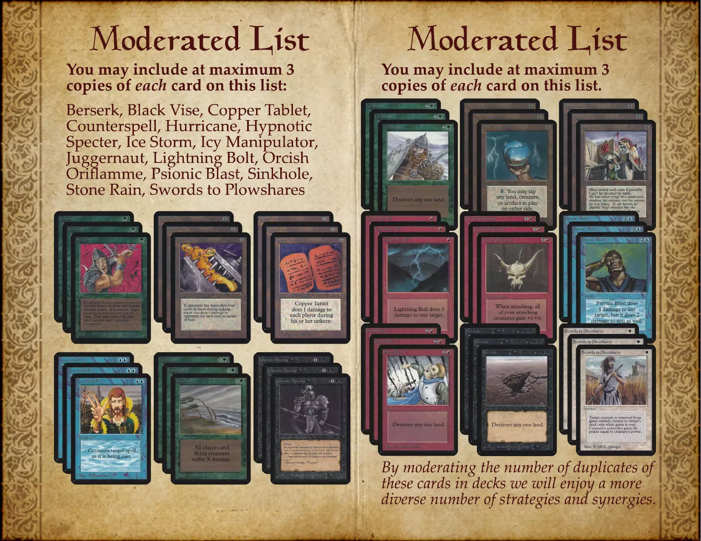
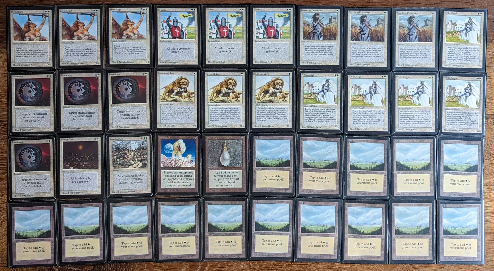

There is a paradox in the world of "Magic: The Gathering". The game that took over the world by storm in 1993 does not exist anymore. Due to Wizards of the Coast reprint policy, one cannot crack open boosters of the original edition and build decks with them. It is too bad because it is a well designed set. And it does not look like the game will be revived anytime soon, since the 30th anniversary boosters are $250 a piece.
But the Northern Paladins people had the great idea to create a format emulating that era. Decks are 40 cards. Cards must be picked from the original edition. Max three of a rare. These rules are designed to replicate the set of cards available after purchasing a few starters. The result is the most fun format I have played in a very long time.

Note: Rules have seen been updated[1] since I wrote this article. Ancestral Recall is so strong it now takes both the Power and Draw slots. Also the Charms are restricted to one of each since they pretty much acted like Stream Of Life.
One thing I particularly appreciate about this format is that it puts a capital "R" on Rare. In this context, these are precious again and I even caught myself rediscovering the beauty of some of the artworks. Drawing a dual land for example, is an event. Playing it makes you appreciate how much it help your mana base. It is a complete departure from later sets where rare cards are just "good" while the rest are not useful.
I built a few decks for me and my wife to play. Most are inspired from past A40 League reports. The creators are credited when I was able to remember their name. Since we don't have enough Alpha cards, I have relaxed the rule to allow Beta, Collector Edition, and Unlimited. We call it A40-ish.
Here is our A40-ish chest.
We like the format so much that we printed the rules to help deck building. If you want to print your own booklet, here is a PDF with a cover (it is the latest rules). You just need to print on 8.5" by 11" and double tap the pages together.
Shadow is a super fun deck to play. You drop a lot of hard to dispose of creatures and boost them with Bad Moon or Unholy Strength. Pestilence is a really good sweeper which combos with Will-o'-the-Wisp (they regenerate). The Black Knight are also difficult to deal with for decks relying on Swords to Plowshares.
Assassin Royal may not be the best choice since it is meant for defense ... but it is such an emblematic cool looking card! I also considered Nightmare but it is hard to cast. Maybe it should just be a third Pestilence.
If you like Mono Black, you are in for a treat from the 2022 A40 League winner, Ian Braun, who wrote an analysis featuring nine variations, per card discussion, and opening hands strategies. However, I don't recommend it for casual. It is obviously strong but watching your opponents do nothing because you SinkHoled all their lands is not interactive.
Everything hurts with Pink Vise. Cards in hand? Damage! Land drop? Damage! It has no creatures so many cards in the opponents hands are useless. It features three strong sweepers with Balance, Wrath Of God, and Earthquake. It is probably one of the strongest deck in the pack.
In this format, Wheel of Fortune is usually not a good pick. But for Pink Wise where the board gets slowed down by Winter Orb and a few Black Vise are in play, it is lethal!
When you mix blue and red, you get purple. And this deck makes it rain.
This deck is also an occasion to rediscover the absolutely gorgeous artwork of Air Elemental by Richard Thomas.
Side note: The advantage of using relaxed A40 rules is that Volcanic Island is available (it was not printed in Alpha).
Not a subtle deck but one that gets the job done! It is strongly inspired from Joel Mick's Elves in 2020 Alpha League. The goal is to keep dropping elves until the opponents cannot remove them. Attack and grow then berserk the one able to hit. Probably on part with Pink Vise in terms of efficiency and dominance. I once got smashed in the vicinity of 40 damage by an angry elf.
I hate The Deck because it is boring to play against. But in A40, "Le Deck" is bearable. Its MVP is without a double Jade Statue (the best creature in the format) which combos with Balance.
Having both BrainGeyser and Ancestral Recall is too powerful. Likely why Northern Paladins ended up amending their deck construction rules. Note that Brian Weissman (who is credited with designing "The Deck") created an A40 version of it, you can see it here.
Light was built both to counter Shadow and as an homage to my favorite deck White Weenie. Unfortunately, the result is not as fun as Shadow. It needs more work. Likely cutting a disenchant and play more creature to make the Crusades more worthy. Suggestions welcome.
A deck that leverage misprints. Both Orcish Artillery and Orcish Oriflamme cost less than they should in their Alpha printings. The Iron Star helps to counter the burn of the Artillery. In latter years this design became known as "Burn" or "Sligh".
Note that as per the latest rules, the three Iron Star make this deck illegal (it was way too strong indeed).
This deck was built with the unique goal to, one day, kill its opponents on Turn 1. All you need is Land, Black Lotus, Channel, and Fireball in your opening hand. It has not happened. Yet.
Note that it can also use Channel/Jade Statue to flood the battlefield.
Using more than two colors in A40 is hard because of the land restrictions. This deck started as a dare to use all colors. Hence the name Arc-En-Ciel (literally, "Arc in the Sky", in English rainbow). To make it viable it is Green/White dominated with Birds of Paradise to smooth Mana issues.
In practice the Birds are living lightning rods. I could probably cut a Plain and a Forest and replace them with something. Maybe Jade Statue?
| ^ | [1] | Alpha 40 Deck Construction rules |